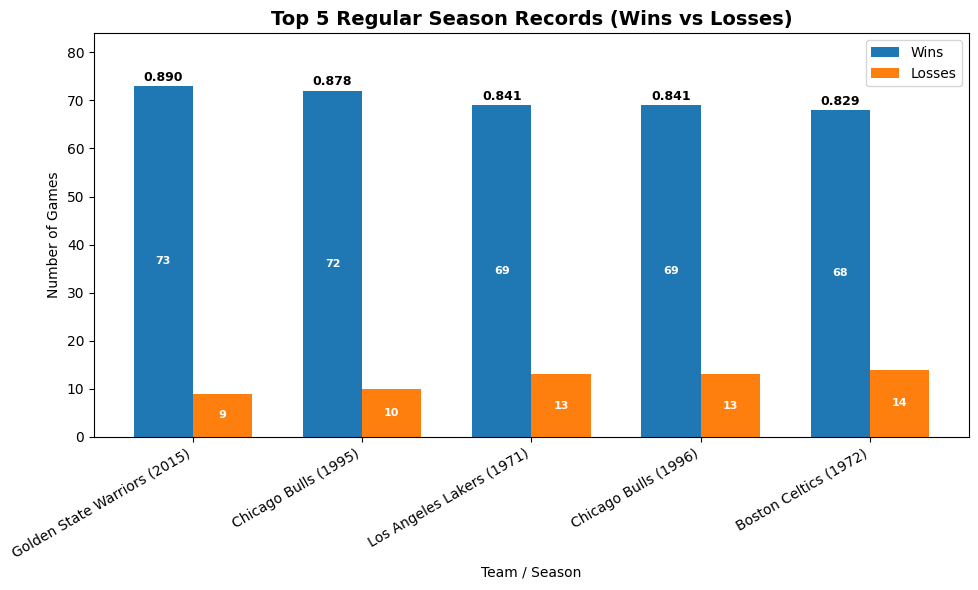
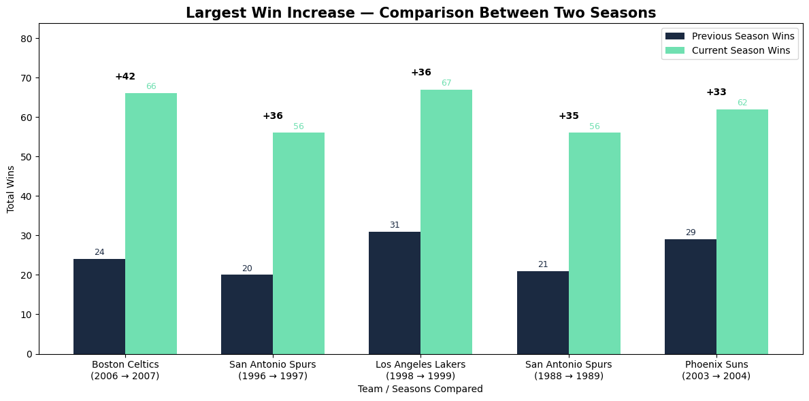
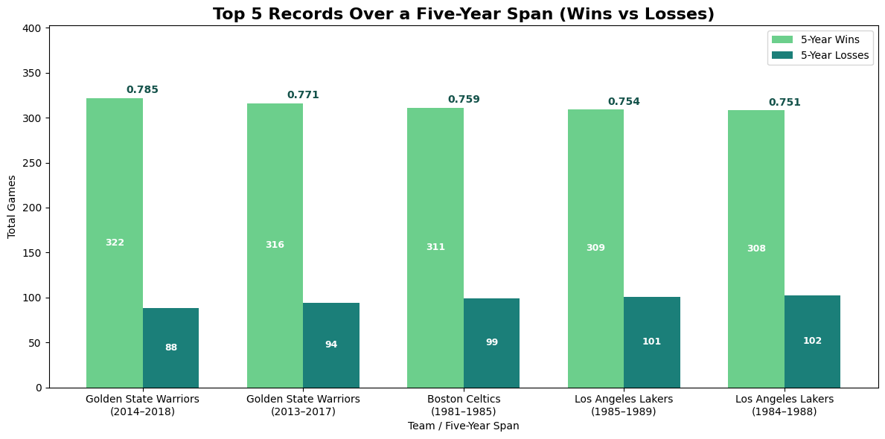
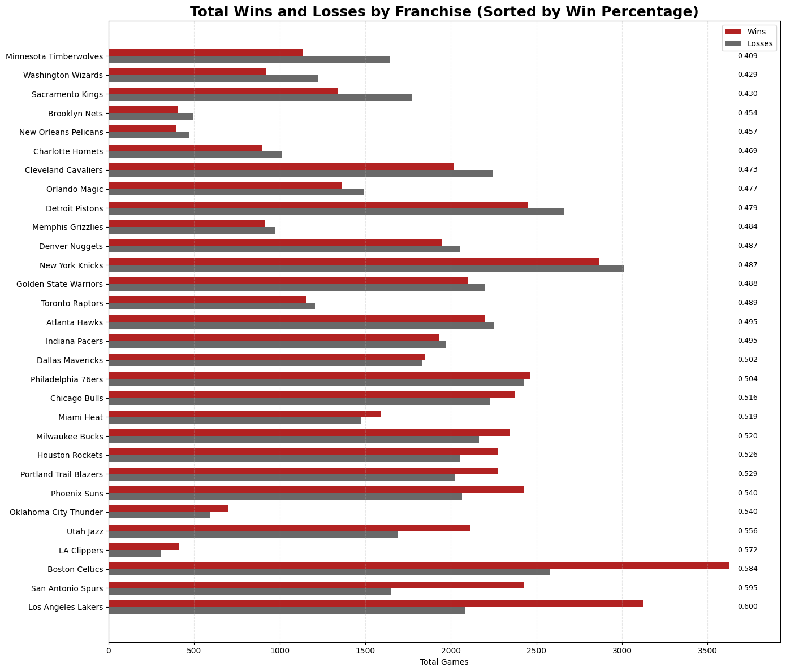
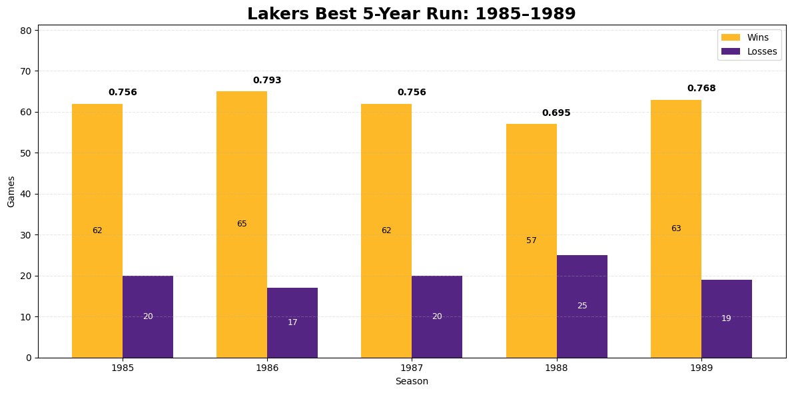

← Back to projects
Basketball Analytics
NBA Team Performance Analysis
Overview
This project delivers a comprehensive, data-driven evaluation of historical NBA franchise performance. The analysis focuses on wins, losses, win percentage, year-over-year improvement, and multi-season dominance patterns across decades.
The project reveals which franchises achieved the best single seasons, the worst seasons, the biggest improvements, and the strongest 5-year dominance windows. A deep-dive also examines the Lakers' strongest five-year run.
Key Questions
- Which teams recorded the best and worst regular seasons in NBA history?
- Which franchises had the strongest five-year stretches?
- Which teams showed the largest single-season jump in wins?
- Which teams have the best all-time win percentage?
- What was the best 5-year run in Lakers history?
Methodology
- Cleaned and aggregated season-level franchise data (wins, losses, win%).
- Built SQL queries to compute rolling 5-year totals and YOY improvements.
- Used Python (pandas + matplotlib) to build polished visualizations.
- Documented findings and insights in a structured case study.
-- Example: Top 5 single-season win percentages
SELECT team_name, season, wins, losses,
ROUND(wins / (wins + losses), 3) AS win_pct
FROM team_seasons
ORDER BY win_pct DESC
FETCH FIRST 5 ROWS ONLY;Results & Visuals
🏆 Best Regular Season Records
🏆 Worst Regular Season Records (Interactive)
Hover to see exact win/loss numbers and toggle series using the legend.
🔺 Largest Win Increase (YoY)
📊 Top 5 Records Over a 5-Year Span
📈 Total Wins & Losses (Sorted by Win%)
🟣🟨 Lakers’ Best 5-Year Run
Key Insights
- Franchises like the Lakers, Celtics, and Spurs demonstrate long-term excellence.
- Large YOY improvements often align with major roster or coaching changes.
- Five-year spans reveal deeper dominance patterns than single seasons alone.
- Win percentage is the strongest measure of long-term franchise consistency.